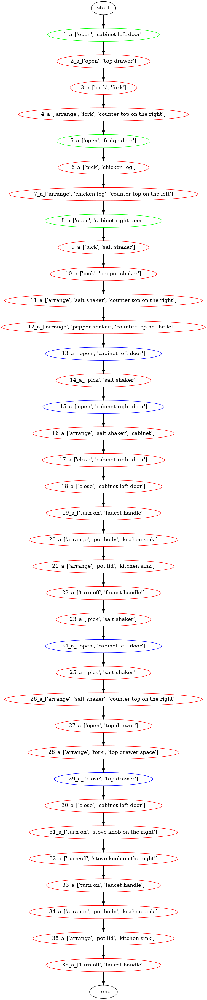

rec_locs/260324_202737_seed_881038
None
| idx | goal | task_idx | status | plan_len | planning_time | planning_objects | object_reducer | planning_node | agent_state |
|---|---|---|---|---|---|---|---|---|---|
| 1 | ['open', (3, 14)] -> [('graspedhandle', (3, 14))] | 1 | solved | 2 | 14.0693 | 1 (joint: 1) | object-related | 1_a_['open', 'cabinet left door'] | |
| 2 | ['open', (3, 48)] -> [('graspedhandle', (3, 48))] | 2 | failed | 0 | 22.6243 | 2 (joint: 1, space: 1) | object-related | 2_a_['open', 'top drawer'] | |
| 3 | ['open', (3, 48)] -> [('graspedhandle', (3, 48))] | 2 | failed | 0 | 23.3891 | 2 (joint: 1, space: 1) | heuristic-movables | 2_a_['open', 'top drawer'] | |
| 4 | ['open', (3, 48)] -> [('graspedhandle', (3, 48))] | 2 | failed | 0 | 23.4482 | 5 (joint: 4, space: 1) | object-related | 2_a_['open', 'top drawer'] | |
| 5 | ['pick', 16] -> [('picked', 16)] | 3 | failed | 0 | 0.462 | 2 (graspable: 1, space: 1) | object-related | 3_a_['pick', 'fork'] | |
| 6 | ['pick', 16] -> [('picked', 16)] | 3 | failed | 0 | 0.4659 | 2 (graspable: 1, space: 1) | heuristic-movables | 3_a_['pick', 'fork'] | |
| 7 | ['pick', 16] -> [('picked', 16)] | 3 | failed | 0 | 8.5974 | 6 (graspable: 1, joint: 4, space: 1) | object-related | 3_a_['pick', 'fork'] | |
| 8 | ['arrange', 16, (3, None, 35)] -> [('stacked', 16, (3, None, 35)), ('placed', 16)] | 4 | failed | 0 | 15.0819 | 3 (graspable: 1, surface: 1, space: 1) | object-related | 4_a_['arrange', 'fork', 'counter top on the right'] | |
| 9 | ['arrange', 16, (3, None, 35)] -> [('stacked', 16, (3, None, 35)), ('placed', 16)] | 4 | failed | 0 | 14.9376 | 3 (graspable: 1, surface: 1, space: 1) | heuristic-movables | 4_a_['arrange', 'fork', 'counter top on the right'] | |
| 10 | ['arrange', 16, (3, None, 35)] -> [('stacked', 16, (3, None, 35)), ('placed', 16)] | 4 | failed | 0 | 60.9968 | 7 (graspable: 1, joint: 4, surface: 1, space: 1) | object-related | 4_a_['arrange', 'fork', 'counter top on the right'] | |
| 11 | ['open', (11, 1)] -> [('graspedhandle', (11, 1))] | 5 | failed | 0 | 15.7681 | 1 (joint: 1) | object-related | 5_a_['open', 'fridge door'] | |
| 12 | ['open', (11, 1)] -> [('graspedhandle', (11, 1))] | 5 | solved | 2 | 11.7023 | 1 (joint: 1) | heuristic-movables | 5_a_['open', 'fridge door'] | |
| 13 | ['pick', 12] -> [('picked', 12)] | 6 | failed | 0 | 13.4515 | 1 (graspable: 1) | object-related | 6_a_['pick', 'chicken leg'] | |
| 14 | ['pick', 12] -> [('picked', 12)] | 6 | failed | 0 | 13.1889 | 1 (graspable: 1) | heuristic-movables | 6_a_['pick', 'chicken leg'] | |
| 15 | ['pick', 12] -> [('picked', 12)] | 6 | failed | 0 | 18.9533 | 5 (graspable: 1, joint: 4) | object-related | 6_a_['pick', 'chicken leg'] | |
| 16 | ['arrange', 12, (3, None, 27)] -> [('stacked', 12, (3, None, 27)), ('placed', 12)] | 7 | failed | 0 | 0.077 | 2 (graspable: 1, surface: 1) | object-related | 7_a_['arrange', 'chicken leg', 'counter top on the left'] | |
| 17 | ['arrange', 12, (3, None, 27)] -> [('stacked', 12, (3, None, 27)), ('placed', 12)] | 7 | failed | 0 | 0.0761 | 2 (graspable: 1, surface: 1) | heuristic-movables | 7_a_['arrange', 'chicken leg', 'counter top on the left'] | |
| 18 | ['arrange', 12, (3, None, 27)] -> [('stacked', 12, (3, None, 27)), ('placed', 12)] | 7 | failed | 0 | 1.1991 | 6 (graspable: 1, joint: 4, surface: 1) | object-related | 7_a_['arrange', 'chicken leg', 'counter top on the left'] | |
| 19 | ['open', (3, 10)] -> [('graspedhandle', (3, 10))] | 8 | solved | 2 | 18.8957 | 1 (joint: 1) | object-related | 8_a_['open', 'cabinet right door'] | |
| 20 | ['pick', 14] -> [('picked', 14)] | 9 | failed | 0 | 9.886 | 2 (graspable: 1, space: 1) | object-related | 9_a_['pick', 'salt shaker'] | |
| 21 | ['pick', 14] -> [('picked', 14)] | 9 | failed | 0 | 9.9733 | 2 (graspable: 1, space: 1) | heuristic-movables | 9_a_['pick', 'salt shaker'] | |
| 22 | ['pick', 14] -> [('picked', 14)] | 9 | failed | 0 | 18.3229 | 6 (graspable: 1, joint: 4, space: 1) | object-related | 9_a_['pick', 'salt shaker'] | |
| 23 | ['pick', 15] -> [('picked', 15)] | 10 | failed | 0 | 9.842 | 2 (graspable: 1, space: 1) | object-related | 10_a_['pick', 'pepper shaker'] | |
| 24 | ['pick', 15] -> [('picked', 15)] | 10 | failed | 0 | 9.7353 | 2 (graspable: 1, space: 1) | heuristic-movables | 10_a_['pick', 'pepper shaker'] | |
| 25 | ['pick', 15] -> [('picked', 15)] | 10 | failed | 0 | 18.6137 | 6 (graspable: 1, joint: 4, space: 1) | object-related | 10_a_['pick', 'pepper shaker'] | |
| 26 | ['arrange', 14, (3, None, 35)] -> [('stacked', 14, (3, None, 35)), ('placed', 14)] | 11 | failed | 0 | 17.1037 | 3 (graspable: 1, surface: 1, space: 1) | object-related | 11_a_['arrange', 'salt shaker', 'counter top on the right'] | |
| 27 | ['arrange', 14, (3, None, 35)] -> [('stacked', 14, (3, None, 35)), ('placed', 14)] | 11 | failed | 0 | 17.0641 | 3 (graspable: 1, surface: 1, space: 1) | heuristic-movables | 11_a_['arrange', 'salt shaker', 'counter top on the right'] | |
| 28 | ['arrange', 14, (3, None, 35)] -> [('stacked', 14, (3, None, 35)), ('placed', 14)] | 11 | failed | 0 | 35.9794 | 7 (graspable: 1, joint: 4, surface: 1, space: 1) | object-related | 11_a_['arrange', 'salt shaker', 'counter top on the right'] | |
| 29 | ['arrange', 15, (3, None, 27)] -> [('placed', 15), ('stacked', 15, (3, None, 27))] | 12 | failed | 0 | 17.1545 | 3 (graspable: 1, surface: 1, space: 1) | object-related | 12_a_['arrange', 'pepper shaker', 'counter top on the left'] | |
| 30 | ['arrange', 15, (3, None, 27)] -> [('placed', 15), ('stacked', 15, (3, None, 27))] | 12 | failed | 0 | 17.2677 | 3 (graspable: 1, surface: 1, space: 1) | heuristic-movables | 12_a_['arrange', 'pepper shaker', 'counter top on the left'] | |
| 31 | ['arrange', 15, (3, None, 27)] -> [('placed', 15), ('stacked', 15, (3, None, 27))] | 12 | failed | 0 | 36.2021 | 7 (graspable: 1, joint: 4, surface: 1, space: 1) | object-related | 12_a_['arrange', 'pepper shaker', 'counter top on the left'] | |
| 32 | ['open([(3, 14)])'] -> [('graspedhandle', (3, 14))] | 13 | already | 0 | 0 | object-related | 13_a_['open', 'cabinet left door'] | ||
| 33 | ['pick', 14] -> [('picked', 14)] | 14 | failed | 0 | 10.1379 | 2 (graspable: 1, space: 1) | object-related | 14_a_['pick', 'salt shaker'] | |
| 34 | ['pick', 14] -> [('picked', 14)] | 14 | failed | 0 | 10.164 | 2 (graspable: 1, space: 1) | heuristic-movables | 14_a_['pick', 'salt shaker'] | |
| 35 | ['pick', 14] -> [('picked', 14)] | 14 | failed | 0 | 18.8244 | 6 (graspable: 1, joint: 4, space: 1) | object-related | 14_a_['pick', 'salt shaker'] | |
| 36 | ['open([(3, 10)])'] -> [('graspedhandle', (3, 10))] | 15 | already | 0 | 0 | object-related | 15_a_['open', 'cabinet right door'] | ||
| 37 | ['arrange', 14, (3, None, 0)] -> [('stacked', 14, (3, None, 0)), ('placed', 14)] | 16 | failed | 0 | 16.836 | 2 (graspable: 1, space: 1) | object-related | 16_a_['arrange', 'salt shaker', 'cabinet'] | |
| 38 | ['arrange', 14, (3, None, 0)] -> [('stacked', 14, (3, None, 0)), ('placed', 14)] | 16 | failed | 0 | 16.6627 | 2 (graspable: 1, space: 1) | heuristic-movables | 16_a_['arrange', 'salt shaker', 'cabinet'] | |
| 39 | ['arrange', 14, (3, None, 0)] -> [('stacked', 14, (3, None, 0)), ('placed', 14)] | 16 | failed | 0 | 33.1236 | 6 (graspable: 1, joint: 4, space: 1) | object-related | 16_a_['arrange', 'salt shaker', 'cabinet'] | |
| 40 | ['close', (3, 10)] -> [('graspedhandle', (3, 10))] | 17 | failed | 0 | 15.5228 | 1 (joint: 1) | object-related | 17_a_['close', 'cabinet right door'] | |
| 41 | ['close', (3, 10)] -> [('graspedhandle', (3, 10))] | 17 | failed | 0 | 16.1729 | 1 (joint: 1) | heuristic-movables | 17_a_['close', 'cabinet right door'] | |
| 42 | ['close', (3, 10)] -> [('graspedhandle', (3, 10))] | 17 | failed | 0 | 13.971 | 4 (joint: 4) | object-related | 17_a_['close', 'cabinet right door'] | |
| 43 | ['close', (3, 14)] -> [('graspedhandle', (3, 14))] | 18 | failed | 0 | 14.3405 | 1 (joint: 1) | object-related | 18_a_['close', 'cabinet left door'] | |
| 44 | ['close', (3, 14)] -> [('graspedhandle', (3, 14))] | 18 | failed | 0 | 15.2612 | 1 (joint: 1) | heuristic-movables | 18_a_['close', 'cabinet left door'] | |
| 45 | ['close', (3, 14)] -> [('graspedhandle', (3, 14))] | 18 | failed | 0 | 15.1865 | 4 (joint: 4) | object-related | 18_a_['close', 'cabinet left door'] | |
| 46 | ['turn-on', (10, 3)] -> [('graspedhandle', (10, 3))] | 19 | failed | 0 | 55.4099 | 1 (joint: 1) | object-related | 19_a_['turn-on', 'faucet handle'] | |
| 47 | ['turn-on', (10, 3)] -> [('graspedhandle', (10, 3))] | 19 | failed | 0 | 55.8226 | 1 (joint: 1) | heuristic-movables | 19_a_['turn-on', 'faucet handle'] | |
| 48 | ['turn-on', (10, 3)] -> [('graspedhandle', (10, 3))] | 19 | failed | 0 | 55.3092 | 5 (joint: 5) | object-related | 19_a_['turn-on', 'faucet handle'] | |
| 49 | ['arrange', 5, (9, None, 3)] -> [('placed', 5), ('stacked', 5, (9, None, 3))] | 20 | failed | 0 | 0.1313 | 4 (graspable: 1, surface: 2, space: 1) | object-related | 20_a_['arrange', 'pot body', 'kitchen sink'] | |
| 50 | ['arrange', 5, (9, None, 3)] -> [('placed', 5), ('stacked', 5, (9, None, 3))] | 20 | failed | 0 | 0.1633 | 4 (graspable: 1, surface: 2, space: 1) | heuristic-movables | 20_a_['arrange', 'pot body', 'kitchen sink'] | |
| 51 | ['arrange', 5, (9, None, 3)] -> [('placed', 5), ('stacked', 5, (9, None, 3))] | 20 | failed | 0 | 1.5136 | 8 (graspable: 1, joint: 4, surface: 2, space: 1) | object-related | 20_a_['arrange', 'pot body', 'kitchen sink'] | |
| 52 | ['arrange', 4, (9, None, 3)] -> [('placed', 4), ('stacked', 4, (9, None, 3))] | 21 | failed | 0 | 21.1918 | 5 (graspable: 2, surface: 2, space: 1) | object-related | 21_a_['arrange', 'pot lid', 'kitchen sink'] | |
| 53 | ['arrange', 4, (9, None, 3)] -> [('placed', 4), ('stacked', 4, (9, None, 3))] | 21 | failed | 0 | 19.5441 | 5 (graspable: 2, surface: 2, space: 1) | heuristic-movables | 21_a_['arrange', 'pot lid', 'kitchen sink'] | |
| 54 | ['arrange', 4, (9, None, 3)] -> [('placed', 4), ('stacked', 4, (9, None, 3))] | 21 | failed | 0 | 51.4617 | 9 (graspable: 2, joint: 4, surface: 2, space: 1) | object-related | 21_a_['arrange', 'pot lid', 'kitchen sink'] | |
| 55 | ['turn-off', (10, 3)] -> [('graspedhandle', (10, 3))] | 22 | failed | 0 | 55.9143 | 1 (joint: 1) | object-related | 22_a_['turn-off', 'faucet handle'] | |
| 56 | ['turn-off', (10, 3)] -> [('graspedhandle', (10, 3))] | 22 | failed | 0 | 55.9266 | 1 (joint: 1) | heuristic-movables | 22_a_['turn-off', 'faucet handle'] | |
| 57 | ['turn-off', (10, 3)] -> [('graspedhandle', (10, 3))] | 22 | failed | 0 | 56.654 | 5 (joint: 5) | object-related | 22_a_['turn-off', 'faucet handle'] | |
| 58 | ['pick', 14] -> [('picked', 14)] | 23 | failed | 0 | 10.1377 | 2 (graspable: 1, space: 1) | object-related | 23_a_['pick', 'salt shaker'] | |
| 59 | ['pick', 14] -> [('picked', 14)] | 23 | failed | 0 | 10.268 | 2 (graspable: 1, space: 1) | heuristic-movables | 23_a_['pick', 'salt shaker'] | |
| 60 | ['pick', 14] -> [('picked', 14)] | 23 | failed | 0 | 16.8616 | 6 (graspable: 1, joint: 4, space: 1) | object-related | 23_a_['pick', 'salt shaker'] | |
| 61 | ['open([(3, 14)])'] -> [('graspedhandle', (3, 14))] | 24 | already | 0 | 0 | object-related | 24_a_['open', 'cabinet left door'] | ||
| 62 | ['pick', 14] -> [('picked', 14)] | 25 | failed | 0 | 10.0901 | 2 (graspable: 1, space: 1) | object-related | 25_a_['pick', 'salt shaker'] | |
| 63 | ['pick', 14] -> [('picked', 14)] | 25 | failed | 0 | 9.9563 | 2 (graspable: 1, space: 1) | heuristic-movables | 25_a_['pick', 'salt shaker'] | |
| 64 | ['pick', 14] -> [('picked', 14)] | 25 | failed | 0 | 18.9948 | 6 (graspable: 1, joint: 4, space: 1) | object-related | 25_a_['pick', 'salt shaker'] | |
| 65 | ['arrange', 14, (3, None, 35)] -> [('stacked', 14, (3, None, 35)), ('placed', 14)] | 26 | failed | 0 | 17.2572 | 3 (graspable: 1, surface: 1, space: 1) | object-related | 26_a_['arrange', 'salt shaker', 'counter top on the right'] | |
| 66 | ['arrange', 14, (3, None, 35)] -> [('stacked', 14, (3, None, 35)), ('placed', 14)] | 26 | failed | 0 | 17.3249 | 3 (graspable: 1, surface: 1, space: 1) | heuristic-movables | 26_a_['arrange', 'salt shaker', 'counter top on the right'] | |
| 67 | ['arrange', 14, (3, None, 35)] -> [('stacked', 14, (3, None, 35)), ('placed', 14)] | 26 | failed | 0 | 36.5687 | 7 (graspable: 1, joint: 4, surface: 1, space: 1) | object-related | 26_a_['arrange', 'salt shaker', 'counter top on the right'] | |
| 68 | ['open', (3, 48)] -> [('graspedhandle', (3, 48))] | 27 | failed | 0 | 23.0155 | 2 (joint: 1, space: 1) | object-related | 27_a_['open', 'top drawer'] | |
| 69 | ['open', (3, 48)] -> [('graspedhandle', (3, 48))] | 27 | failed | 0 | 23.8872 | 2 (joint: 1, space: 1) | heuristic-movables | 27_a_['open', 'top drawer'] | |
| 70 | ['open', (3, 48)] -> [('graspedhandle', (3, 48))] | 27 | failed | 0 | 23.2343 | 5 (joint: 4, space: 1) | object-related | 27_a_['open', 'top drawer'] | |
| 71 | ['arrange', 16, (3, None, 48)] -> [('placed', 16), ('stacked', 16, (3, None, 48))] | 28 | failed | 0 | 0.0901 | 2 (graspable: 1, space: 1) | object-related | 28_a_['arrange', 'fork', 'top drawer space'] | |
| 72 | ['arrange', 16, (3, None, 48)] -> [('placed', 16), ('stacked', 16, (3, None, 48))] | 28 | failed | 0 | 0.092 | 2 (graspable: 1, space: 1) | heuristic-movables | 28_a_['arrange', 'fork', 'top drawer space'] | |
| 73 | ['arrange', 16, (3, None, 48)] -> [('placed', 16), ('stacked', 16, (3, None, 48))] | 28 | failed | 0 | 8.0664 | 6 (graspable: 1, joint: 4, space: 1) | object-related | 28_a_['arrange', 'fork', 'top drawer space'] | |
| 74 | ['close([(3, 48)])'] -> [('graspedhandle', (3, 48))] | 29 | already | 0 | 0 | object-related | 29_a_['close', 'top drawer'] | ||
| 75 | ['close', (3, 14)] -> [('graspedhandle', (3, 14))] | 30 | failed | 0 | 15.0835 | 1 (joint: 1) | object-related | 30_a_['close', 'cabinet left door'] | |
| 76 | ['close', (3, 14)] -> [('graspedhandle', (3, 14))] | 30 | failed | 0 | 16.2831 | 1 (joint: 1) | heuristic-movables | 30_a_['close', 'cabinet left door'] | |
| 77 | ['close', (3, 14)] -> [('graspedhandle', (3, 14))] | 30 | failed | 0 | 15.5202 | 4 (joint: 4) | object-related | 30_a_['close', 'cabinet left door'] | |
| 78 | ['turn-on', (6, 5)] -> [('graspedhandle', (6, 5))] | 31 | failed | 0 | 17.4742 | 1 (joint: 1) | object-related | 31_a_['turn-on', 'stove knob on the right'] | |
| 79 | ['turn-on', (6, 5)] -> [('graspedhandle', (6, 5))] | 31 | failed | 0 | 17.5659 | 1 (joint: 1) | heuristic-movables | 31_a_['turn-on', 'stove knob on the right'] | |
| 80 | ['turn-on', (6, 5)] -> [('graspedhandle', (6, 5))] | 31 | failed | 0 | 18.2127 | 5 (joint: 5) | object-related | 31_a_['turn-on', 'stove knob on the right'] | |
| 81 | ['turn-off', (6, 5)] -> [('graspedhandle', (6, 5))] | 32 | failed | 0 | 17.3369 | 1 (joint: 1) | object-related | 32_a_['turn-off', 'stove knob on the right'] | |
| 82 | ['turn-off', (6, 5)] -> [('graspedhandle', (6, 5))] | 32 | failed | 0 | 18.0159 | 1 (joint: 1) | heuristic-movables | 32_a_['turn-off', 'stove knob on the right'] | |
| 83 | ['turn-off', (6, 5)] -> [('graspedhandle', (6, 5))] | 32 | failed | 0 | 17.883 | 5 (joint: 5) | object-related | 32_a_['turn-off', 'stove knob on the right'] | |
| 84 | ['turn-on', (10, 3)] -> [('graspedhandle', (10, 3))] | 33 | failed | 0 | 56.0268 | 1 (joint: 1) | object-related | 33_a_['turn-on', 'faucet handle'] | |
| 85 | ['turn-on', (10, 3)] -> [('graspedhandle', (10, 3))] | 33 | failed | 0 | 56.2588 | 1 (joint: 1) | heuristic-movables | 33_a_['turn-on', 'faucet handle'] | |
| 86 | ['turn-on', (10, 3)] -> [('graspedhandle', (10, 3))] | 33 | failed | 0 | 56.6467 | 5 (joint: 5) | object-related | 33_a_['turn-on', 'faucet handle'] | |
| 87 | ['arrange', 5, (9, None, 3)] -> [('placed', 5), ('stacked', 5, (9, None, 3))] | 34 | failed | 0 | 0.1257 | 4 (graspable: 1, surface: 2, space: 1) | object-related | 34_a_['arrange', 'pot body', 'kitchen sink'] | |
| 88 | ['arrange', 5, (9, None, 3)] -> [('placed', 5), ('stacked', 5, (9, None, 3))] | 34 | failed | 0 | 0.1275 | 4 (graspable: 1, surface: 2, space: 1) | heuristic-movables | 34_a_['arrange', 'pot body', 'kitchen sink'] | |
| 89 | ['arrange', 5, (9, None, 3)] -> [('placed', 5), ('stacked', 5, (9, None, 3))] | 34 | failed | 0 | 3.8373 | 8 (graspable: 1, joint: 4, surface: 2, space: 1) | object-related | 34_a_['arrange', 'pot body', 'kitchen sink'] | |
| 90 | ['arrange', 4, (9, None, 3)] -> [('placed', 4), ('stacked', 4, (9, None, 3))] | 35 | failed | 0 | 21.7388 | 5 (graspable: 2, surface: 2, space: 1) | object-related | 35_a_['arrange', 'pot lid', 'kitchen sink'] | |
| 91 | ['arrange', 4, (9, None, 3)] -> [('placed', 4), ('stacked', 4, (9, None, 3))] | 35 | failed | 0 | 21.9127 | 5 (graspable: 2, surface: 2, space: 1) | heuristic-movables | 35_a_['arrange', 'pot lid', 'kitchen sink'] | |
| 92 | ['arrange', 4, (9, None, 3)] -> [('placed', 4), ('stacked', 4, (9, None, 3))] | 35 | failed | 0 | 52.8069 | 9 (graspable: 2, joint: 4, surface: 2, space: 1) | object-related | 35_a_['arrange', 'pot lid', 'kitchen sink'] | |
| 93 | ['turn-off', (10, 3)] -> [('graspedhandle', (10, 3))] | 36 | failed | 0 | 59.0346 | 1 (joint: 1) | object-related | 36_a_['turn-off', 'faucet handle'] | |
| 94 | ['turn-off', (10, 3)] -> [('graspedhandle', (10, 3))] | 36 | failed | 0 | 56.3345 | 1 (joint: 1) | heuristic-movables | 36_a_['turn-off', 'faucet handle'] | |
| 95 | ['turn-off', (10, 3)] -> [('graspedhandle', (10, 3))] | 36 | failed | 0 | 56.5509 | 5 (joint: 5) | object-related | 36_a_['turn-off', 'faucet handle'] | |
| 96 | ['turn-off', (10, 3)] -> [('graspedhandle', (10, 3))] | 36 | failed | 0 | 56.8393 | 5 (joint: 5) | object-related | 36_a_['turn-off', 'faucet handle'] | |
| Continuous Success 0.12 (1 / 8) |
Task Progress 4.38 (35 / 8) |
Planning Success 0.09 (3 / 32) |
6 | 1997.24 | 44.67 (effective time) | 1952.57 (wasted time) |
| Round 1 | |
|
 |
|